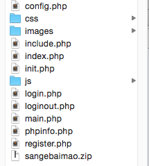

上周五三个白帽有个ctf的解题游戏，目标是通过代码审计直至获取目标服务器中的flag。这个解题游戏略坑，但是漏洞点在真实环境下都是存在的。所以，越绕越能激发兴趣，总之玩下来还是很开心的，遂于大家分享下全部过程的思路。
题目解析
这套题目是由php编写，接近实战。通过做完题目，整理内容后发现，这套题目涉及的内容还是很多的。
涉及的技术点
- 1，敏感信息扫描
- 2，代码审计
- 1，可控数据
- 2，二次注入
- 3，文件包含
- 4，变量覆盖
- 3，Getshell技巧
- 4，手工读文件
思路流程
起始URL为
|
|
通过穷举URL路径，发现目录存在sangebaimao.zip文件，下载后开始代码审计。

通过web功能和代码阅读，发现存在如下功能。
- 注册
- 登陆
- 留言
- 登出
阅读注册的代码。
|
|
filter函数为摆设，实际没有功能。因此发现可控参数为
- username
- name
- limit
阅读init.php内的include.php代码
|
|
发现存在__autoload函数，对于获取的参数均过addslashes函数处理，但是由于$$存在，可能存在变量被覆盖的情况。
阅读login.php代码
|
|
session会存储人可控参数name和limit。
阅读main.php代码
|
|
发现insert语句和select语句存在注入，通过变量覆盖进入class_exists方法，触发autoload函数(class_exists方法被执行时，会自动触发autoload函数)。
PS：此处是当时做题的一些错误思路。
- 认为header函数后，会跳出，并不执行后面的select语句，其实这个想法是错的，若想跳出，正确的写法是在header函数后加上die函数或者exit函数。
至此，整个getshell的思路已经缕清了。
- 通过二次注入写shell。
- 通过文件包含读shell。
但是问题又出来了，我们知道，只有select语句中，才能写shell，并且通过写shell要有union select。可这次的注入点在是在select语句的limit条件后，那么该怎么办呢。经过询问，得到了limit后可以直接拼接 into outfile函数的这一特性。
好了，我们可以写文件了，那么该如何写呢？
先说下当时的错误思路
首先，我们通过注册，可控name参数，但是注册的时候参数有htmlspecialchars转义，因此必须用16进制传入，但是由于
|
|
我陷入了必须使insert语句报错，才能逃出header函数的错误思路。这个错误思路的流程是insert，select。
正确思路
通过name参数，覆盖掉message参数，预期的sql查询语句如下。
|
|
最终整个流程正确的做法是，insert，insert，select。
对了，由于当时web目录不可写，只能向tmp目录写。
|
|
总结
这套题目做下来还是非常有意思的，各个位置的设置考察了不同的内容，也让大家体验了极端情况下的getshell方式。这套题目的环境非常容易搭建，希望有时间大家也玩玩这套题目。代码见附件。